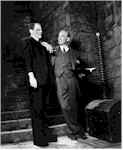

Contents | Features | Reviews | News | Archives | Store |
 |
|
| Movie Credits | Buy It! |
Gods and Monsters
Review by Elias Savada
Posted 6 November 1998
 |
Written and Directed by Bill
Condon, based on Father of Frankenstein by Christopher Bram. Starring Ian
McKellen, Brendan Fraser, |
A decidedly collaborative effort of understated technical and thespian accomplishment, Condon until now has been known as a director of a handful of telefeatures and two commercial efforts (Candyman: Farewell to the Flesh and Sister, Sister), as well as co-writer of Strange Invaders and Stranger Behavior [a.k.a. Dead Kids], two early 1980s cult semi-classics for flash-in-the-pan director Michael Laughlin, who recently resurfaced as writer of Warren Beatty’s next feature. Condon has elicited startling performances from his entire cast. Sir Ian McKellen’s impeccably British "Jimmy" Whale is another career defining role that has already won him a Best Actor award at this year’s San Sebastian Film Festival. Bedecked with stylish flair by costume designer Bruce Finlayson, McKellen imbues Whale with a dazzling presence, delectable gestures, and a cauldronful of wit.
Brendan Fraser, best known for airhead comedies like George of the Jungle and Encino Man, shows his serious side as Clayton Boone, an simple-minded, brawny yard worker befriended as a working class foil to ease Whale’s recuperative progress by posing for sketches at the director’s hand. (Whale was an accomplished painter; several of his original works are seen in the film.) Unaware of Whale’s earlier accomplishments or his sexual proclivities, Boone’s homophobic shell slowly breaks as the director pricks away at Boone’s heterosexual sensibilities. The gardener, fascinated with Whale’s ever-flowing and detail-heavy stories of his past lovers and films, realizes this is his brass ring to 15 minutes of fame, something to share with friends and family as he grows old.
Whale’s over-protective and plain Hungarian housemaid Hanna (Lynn Redgrave) deserves special mention as one of the most off-the-wall characters in any film this year. Devoutly religious but resigned to Mr. Jimmy’s colorful lifestyle, she obediently prepares cucumber sandwiches and iced tea when not complaining about his sinful habits. Her accent, hairstyle, habits, and body movements play off her reactions to her employer’s buggering shenanigans and Boone’s innocence. Bring along a wide smile whenever her scowl graces the screen.
Lolita Davidovich has a small role as Boone’s former squeeze and sounding board for Boone’s growing relationship with Whale, while Jack Plotnick provides several moments of geeky delight as a USC film student infatuated with Whale’s horror oeuvre and caught up in a one-side game of strip interview with the retired, and excessively bored director.
I pray Gods and Monsters finds a audience of well-meaning cinephiles and moviegoers, and that it won’t be caught in unfavorable comparisons to McKellen’s concurrent role as the crazed Nazi fugitive in Apt Pupil, or , for that matter, to the lowbrow humor of Bride of Chucky, which, like Gods and Monsters, borrows footage from Bride of Frankenstein.. Aside from the sentimental glimpses of a Hollywood sound set in the mid 1930s, Condon also summons up a wildly entertaining house party honoring Princess Margaret at gay director George Cukor’s palatial estate. Whale, responding to an unexpected invitation, brings along his garden pal to embarrass Cukor before his royal guest, zinging with a catty comment that Boone has "never met a princess, only queens."
Camerawork by Stephen M. Katz is outstanding and the dirge-like score by Carter Burwell (who has composed the music for all the Coen Brothers’ films) provides a haunting texture throughout the film. The end credits harp back to the bygone days of early filmmaking acknowledgments, heralding above the actors’ name that "A Good Cast Is Worth Repeating." Yes, indeed. Yes, indeed.
Be sure to read the Elias Savads's interview, Sean Axmaker's inteview, and the coverage of the film at the Seattle International Film Festival ...
Contents | Features | Reviews | News | Archives | Store
Copyright © 1999 by Nitrate Productions, Inc. All Rights Reserved.